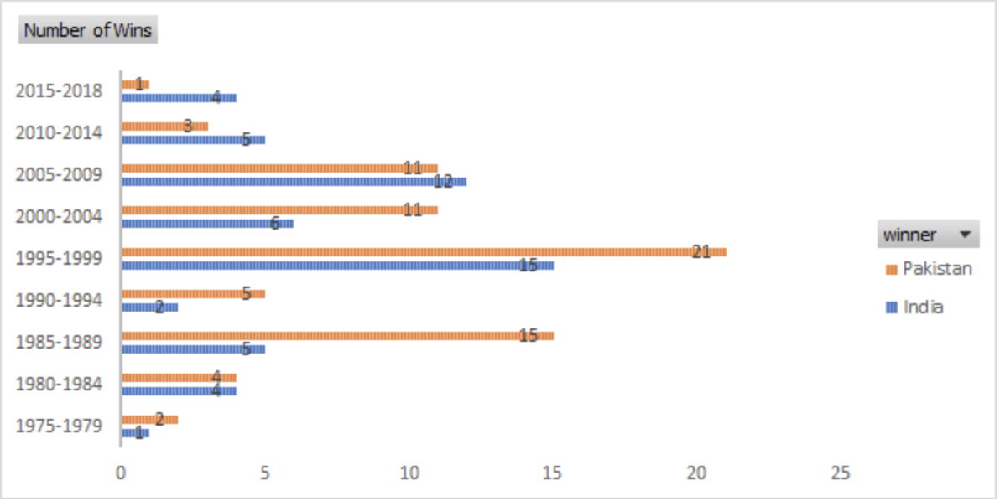
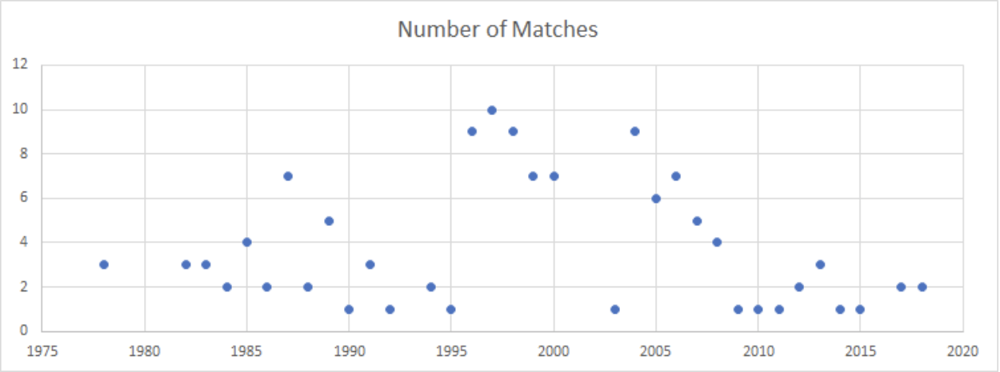

Pakistan’s ODI wins against India have been on a continuous dipping spree for the last decade, despite the 180-run sweep in the Champions Trophy last summer, that remains a stinging sore for the Indians. Tensed bilateral ties, a weak bureaucracy and a notoriously bad reputation has cost them the home-ground advantage.
The India-Pakistan arch-rivalry has been a skirmish of identity and validation. Each match, no matter if it’s just a league game, has a high sentimental value attached to it. Team India has had no shortage of either support or validation. Turns out, that India’s winning streak is a fairly modern phenomenon: influenced heavily by what happens across the barbed wires and outside the setting of billions of Indians and Pakistanis glued to their TV screens.
For Pakistan, the sheen of the glorious 15 years of ODI dominance, is now on the verge of wiping out of existence. Here’s why.
Between 1985 and 2005, Pakistan maintained a winning streak of 52 out of 80 matches. What is interesting though, is that the yearly organisation of these matches has been fairly scattered, spiking to a maximum of ten matches being played in 1997 and fairly fluctuating around the same ballpark.
The turn of the century saw a series of political speculations and ceasefire violations that strained bilateral ties, and reflected onto the ODIs. The years that stand out in the fluctuations are 1989-90, 2000-2004 and 2008-2018.
 Read More!Amidst spot-fixing accusations in 2010, Pakistan managed to keep its tab of wins marginally higher than India. The lack of a homeground does not have any perceivable effect on Pakistan’s performance until the last decade. With the number of ODIs reduced, Pakistani cricket has been losing out on its morale. It lost a host of commitments from countries who were to engage in multi-format series with Pakistan. Lack of funding and a marred public image of the team and its players seems to have taken a toll on their performance.
One of the most influential factors that play into Pakistan’s performance in international cricket is that of the reigning political party in the country. During the ceasefire violations in 2003, Pervez Musharraf attempted to arrive at a resolution alongside his Indian counterpart. This was also when the number of matches played against India was at the lowest in a decade. Unfortunately, his term exhausted right before the shocking attack on the Sri Lankan National Team. The Sharif cabinet was less motivated than its predecessor. With a feeling of uneasiness in the dressing room and a very weak and uninspired board managing the team, Pakistan started losing out on a lot of opportunities to engage with other countries.
The number of ODI matches played between India and Pakistan post-2011 suffered hugely because of the inability of the governments to come to a consensus within themselves. Pakistan’s priorities shifted towards security and defence which pushed cricket into the background. Its attempt at pulling off a Pakistani version of the IPL also received a poor response from the international cricketing community and the overseas players weren’t very keen about playing on Pakistani soil.
India on the other hand continued to rise in the rankings and had impressive performances at most of the major tournaments. The indian team has had several successful overseas tours as well as winning sprees in home matches. Against Pakistan specifically, India has won 9 out of the last 13 encounters in one day internationals. Currently, India is ranked Number 1 in Tests and Number 2 in ODIs whereas Pakistan is at rank 7 and 5 in the two formats respectively.

However, Pakistan cricket board’s attitude towards cricket infrastructure now seems to be taking a turn for the better. The Dawn reported earlier this July: “The PCB on Monday presented its budget for the financial year 2018-19 and claimed a healthy financial position, showing an income of PKR 6.4 billion and expenses amounting PKR 5.7 billion which means a net income of PKR 700 million.” PCB claims to allocate PKR 2.66 billion into building infrastructure “mainly comprising stadiums in Karachi, Rawalpindi and Multan and also for cricket academies at Lahore, Multan and Karachi”. Though present budget allocations look on the optimistic side, the drawbacks of being a Pakistani cricket player continue to suppress any emerging talents in the country.